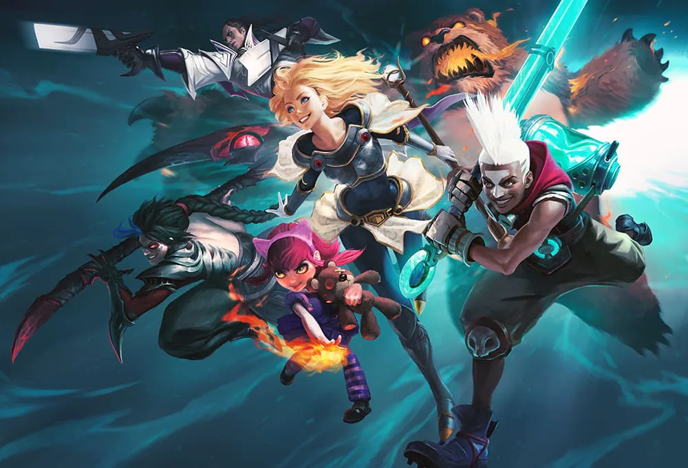

- league of legend
- history of lol
- 롤 티어 종류
- league of legend
- history of lol
- 롤 티어 종류
league of legend
리그 오브 레전드는 세계 최고의 MOBA게임입니다. 끝없이 이어지는 실시간 전투와 협동을
통한 팀플레이, RTS와 RPG를 하나의 게임에서 동시에 즐길 수 있는 새로운 장르의 온라인
게임입니다. 또한 끈임없이 추가되는 챔피언(게임 내 플레이어들이 조종하는 캐릭터), 꾸준
한 업데이트로 지금까지도 수많은 플레이어들에게 사랑 받고 있습니다.

리그오브레전드는 각 5명의 팀원들이 매칭되어서 총 2팀이 맞붙게되는 시스템입니다.
각 5명이 게임내에서 라인을 형성하여 시작하게되는데 탑,미드,봇,정글,서폿 이렇게 총
5개가 있습니다.
팀원간의 소통 및 협력을 통하여 상대의 넥서스(기지)를 부수면 승리하는
게임입니다.
또한 랭크 시스템이라고 게임을 이기면 포인트를 얻어서 점점 높은 랭크로 올라가는
경쟁 시스템도 도입되어있습니다.
랭크는 아이언, 브론즈, 실버, 골드, 플레티넘, 다이아몬드, 마스터,
그랜드마스터, 챌린저로 구성되어 있습니다.